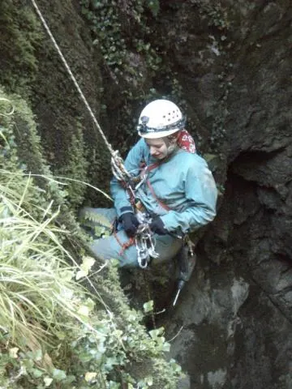

Çıngırık Kuyusu'nun Kadınları


Genişçe bir havzanın suyunu toplayan dere MTA jeolojik haritasına göre Kretase kalker olan bir kütleye, 12 m çapında ve 12 m derinlikte, oldukça büyük ve ihtişamlı bir ağızla batmakta. İlk salonun ardından eğimli bir galeri ve 6 m'lik ufak bir iniş var. Mağara bundan sonra oldukça çamurlu ve kaygan, biri 60 m'lik tek iniş olan iki inişle devam ediyor. Ulaşılan son noktada ise 25 m tavan yüksekliğine sahip devasa bir salon mevcut. Su burada sızarak gözden kayboluyor.
İki ilginç nokta daha: Mağaranın içinde yer aldığı fay kırığı o denli düzgün bir eğime sahip ki en derin noktasından bile ağızın ışığı görünmekte. Ve 100 metre derinliğine karşılık, Çıngırık Kuyusu deniz seviyesinden sadece 150 m yüksekte!
Sonuçta, aşağıdaki haberin devamı olan bu mağara ile birlikte Amasra bölgesine yapılan 4 günlük gezide 4 yeni mağara bulundu ve ölçüldü, çok sayıda yeni ihbar alındı.